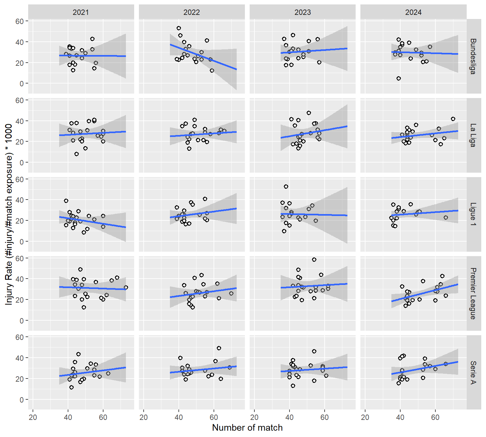
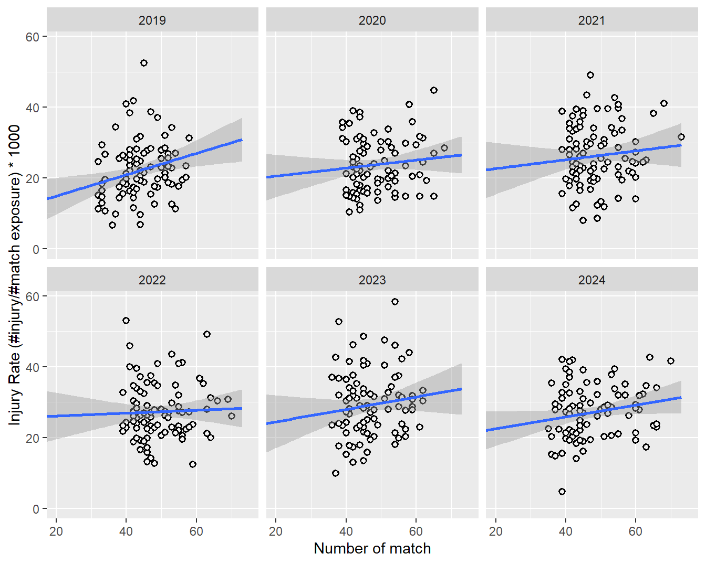
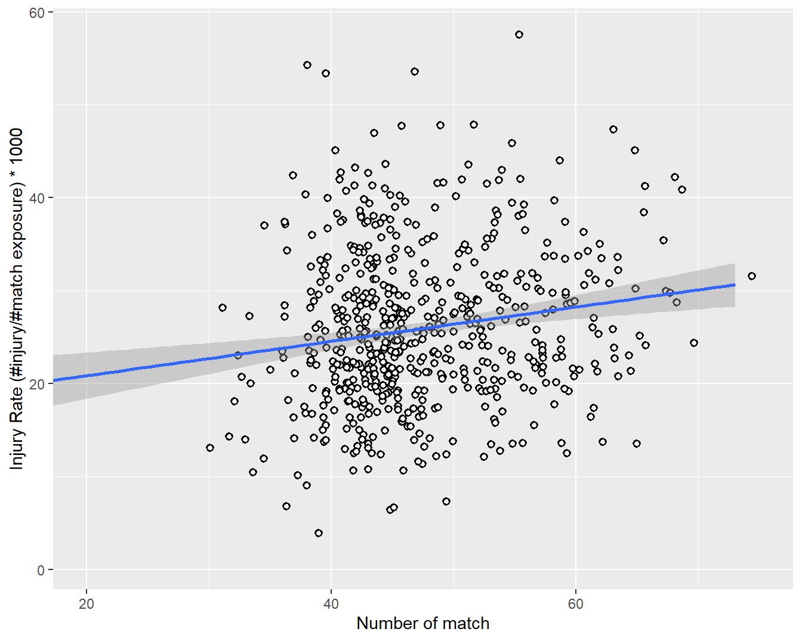
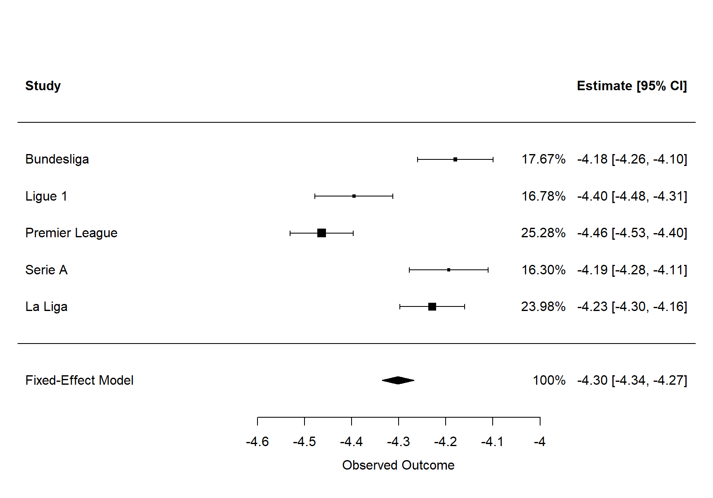
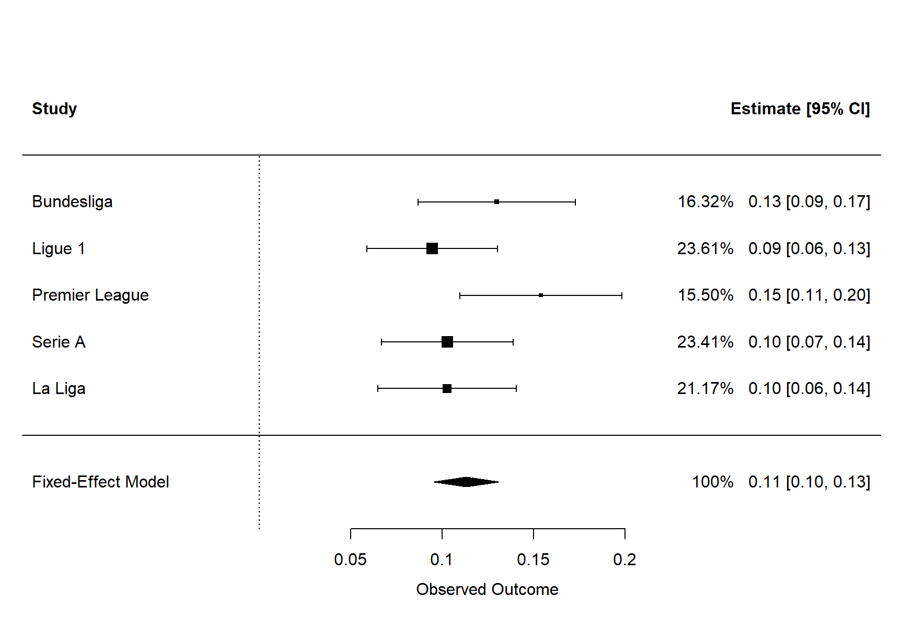
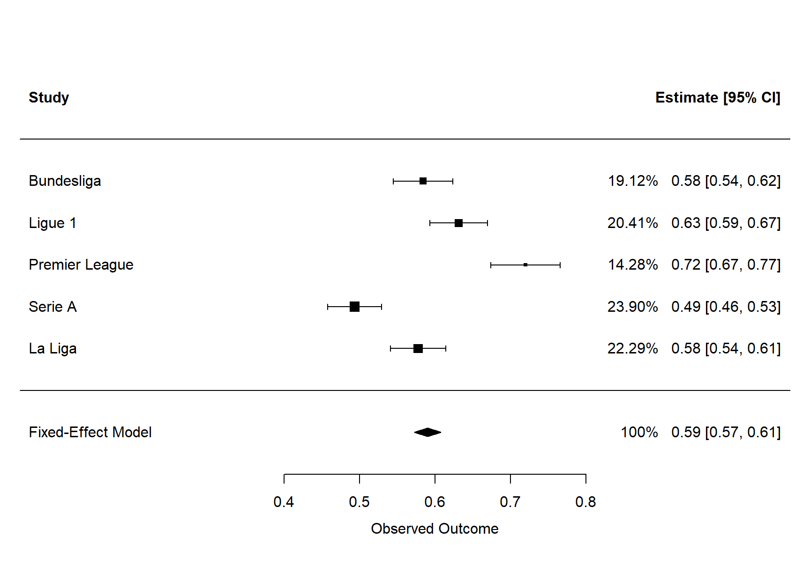
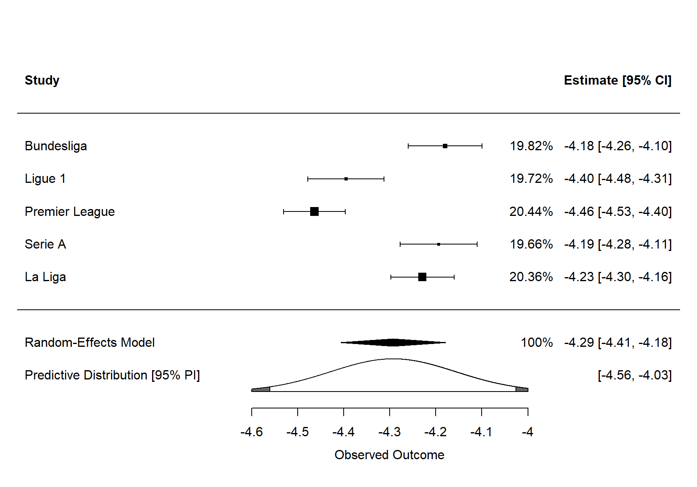
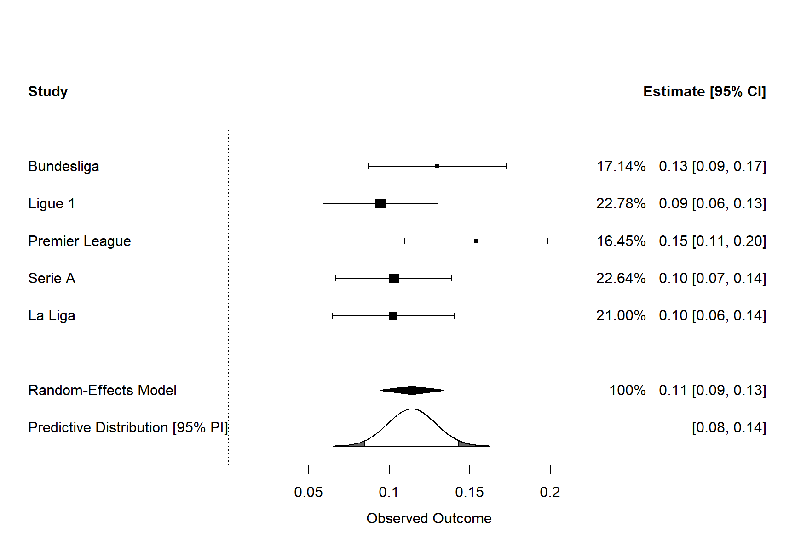
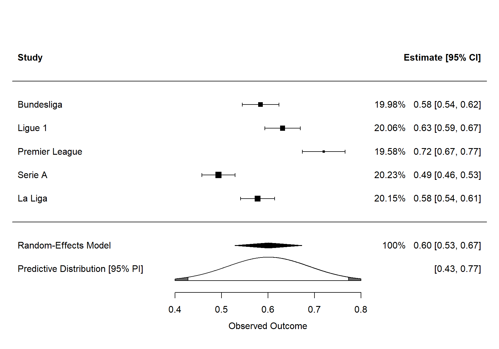

Load packages and setup
suppressPackageStartupMessages({
suppressWarnings({
library(tidyverse)
library(lme4)
library(metafor)
})
})suppressPackageStartupMessages({
suppressWarnings({
library(tidyverse)
library(lme4)
library(metafor)
})
})match_injury <- readRDS(here::here("output/match-played-seleced-team.rds")) |>
summarize(
across(c(n_match, n_injury), \(x) sum(x, na.rm = TRUE)),
.by = c(league, league_tag, team, team_tag, season)
) |>
mutate(
match_exposure = n_match * 11 * 1.5,
match_injury_rate = (n_injury / match_exposure) * 1000
) |>
mutate(season = str_extract(season, "\\d+") |> as.numeric()) |>
separate_wider_regex(league, c(country = ".*?", ". ", league = ".*"))
match_injury |> glimpse()Rows: 1,560
Columns: 10
$ country <chr> "Germany", "Germany", "Germany", "Germany", "Germany…
$ league <chr> "Bundesliga", "Bundesliga", "Bundesliga", "Bundeslig…
$ league_tag <chr> "cp_9", "cp_9", "cp_9", "cp_9", "cp_9", "cp_9", "cp_…
$ team <chr> "Eintracht Frankfurt", "FC St. Pauli von 1910", "Bor…
$ team_tag <chr> "t_979", "t_1018", "t_971", "t_973", "t_972", "t_964…
$ season <dbl> 2010, 2010, 2010, 2010, 2010, 2010, 2010, 2010, 2010…
$ n_match <int> 37, 33, 40, 39, 36, 45, 45, 44, 38, 49, 55, 36, 37, …
$ n_injury <int> 0, 2, 6, 0, 1, 2, 3, 0, 1, 2, 1, 0, 2, 1, 2, 1, 4, 1…
$ match_exposure <dbl> 610.5, 544.5, 660.0, 643.5, 594.0, 742.5, 742.5, 726…
$ match_injury_rate <dbl> 0.000000, 3.673095, 9.090909, 0.000000, 1.683502, 2.…match_injury |>
filter(between(season, 2021, 2024)) |>
ggplot(aes(n_match, match_injury_rate)) +
geom_point(shape = 21, fill = "whitesmoke", stroke = 1) +
geom_smooth(method = "lm", formula = "y ~ x", fullrange = TRUE) +
facet_grid(cols = vars(season), rows = vars(league)) +
scale_color_brewer(palette = "Set1") +
coord_cartesian(xlim = c(20, 75)) +
theme(
legend.position = "bottom",
legend.justification = "left"
) +
labs(
x = "Number of match",
y = "Injury Rate (#injury/#match exposure) * 1000"
)
match_injury |>
filter(between(season, 2019, 2024)) |>
ggplot(aes(n_match, match_injury_rate)) +
geom_point(shape = 21, fill = "whitesmoke", stroke = 1) +
geom_smooth(method = "lm", formula = "y ~ x", fullrange = TRUE) +
facet_wrap(facet = vars(season)) +
scale_color_brewer(palette = "Set1") +
coord_cartesian(xlim = c(20, 75)) +
theme(
legend.position = "bottom",
legend.justification = "left"
) +
labs(
x = "Number of match",
y = "Injury Rate (#injury/#match exposure) * 1000"
)
match_injury |>
filter(between(season, 2019, 2024)) |>
ggplot(aes(n_match, match_injury_rate)) +
geom_point(
shape = 21, fill = "whitesmoke", stroke = 1,
position = position_jitter(width = 2, height = 2)
) +
geom_smooth(method = "lm", formula = "y ~ x", fullrange = TRUE) +
scale_color_brewer(palette = "Set1") +
coord_cartesian(xlim = c(20, 75)) +
theme(
legend.position = "bottom",
legend.justification = "left"
) +
labs(
x = "Number of match",
y = "Injury Rate (#injury/#match exposure) * 1000"
)
match_injury_joint_model <- match_injury |>
mutate(
season_z = (season - mean(season)) / sd(season),
match_played_z = (n_match - mean(n_match)) / sd(n_match)
) |>
lme4::glmer(
n_injury ~ match_played_z + season_z + league + (1 | league:team),
data = _,
family = poisson(link = "log"),
offset = log(match_exposure)
)
summary(match_injury_joint_model)Generalized linear mixed model fit by maximum likelihood (Laplace
Approximation) [glmerMod]
Family: poisson ( log )
Formula: n_injury ~ match_played_z + season_z + league + (1 | league:team)
Data: mutate(match_injury, season_z = (season - mean(season))/sd(season),
match_played_z = (n_match - mean(n_match))/sd(n_match))
Offset: log(match_exposure)
AIC BIC logLik -2*log(L) df.resid
9484.1 9526.9 -4734.0 9468.1 1552
Scaled residuals:
Min 1Q Median 3Q Max
-3.4836 -0.9776 -0.1972 0.7968 5.5785
Random effects:
Groups Name Variance Std.Dev.
league:team (Intercept) 0.03377 0.1838
Number of obs: 1560, groups: league:team, 186
Fixed effects:
Estimate Std. Error z value Pr(>|z|)
(Intercept) -4.187474 0.040075 -104.492 < 2e-16 ***
match_played_z 0.108310 0.008842 12.250 < 2e-16 ***
season_z 0.590194 0.008788 67.155 < 2e-16 ***
leagueLa Liga -0.189128 0.055080 -3.434 0.000595 ***
leagueLigue 1 -0.258907 0.055330 -4.679 2.88e-06 ***
leaguePremier League -0.028789 0.053680 -0.536 0.591746
leagueSerie A -0.051122 0.054246 -0.942 0.345977
---
Signif. codes: 0 '***' 0.001 '**' 0.01 '*' 0.05 '.' 0.1 ' ' 1
Correlation of Fixed Effects:
(Intr) mtch__ sesn_z legLLg legLg1 lgPrmL
mtch_plyd_z 0.038
season_z -0.073 0.198
leagueLaLig -0.716 -0.062 -0.008
leagueLigu1 -0.707 0.013 0.023 0.517
leaguPrmrLg -0.738 -0.076 -0.005 0.537 0.529
leagueSeriA -0.727 -0.014 -0.005 0.528 0.524 0.542match_injury_league_models <- match_injury |>
mutate(
season_z = (season - mean(season)) / sd(season),
match_played_z = (n_match - mean(n_match)) / sd(n_match)
) |>
group_by(league) |>
group_map(~lme4::glmer(
n_injury ~ match_played_z + season_z + (1 | team),
data = .x,
family = poisson(link = "log"),
offset = log(match_exposure)
))
names(match_injury_league_models) <- unique(match_injury$league)Generalized linear mixed model fit by maximum likelihood (Laplace
Approximation) [glmerMod]
Family: poisson ( log )
Formula: n_injury ~ match_played_z + season_z + (1 | team)
Data: .x
Offset: log(match_exposure)
AIC BIC logLik -2*log(L) df.resid
1864.1 1878.7 -928.0 1856.1 284
Scaled residuals:
Min 1Q Median 3Q Max
-3.3135 -1.1645 -0.1465 0.9971 3.9583
Random effects:
Groups Name Variance Std.Dev.
team (Intercept) 0.03225 0.1796
Number of obs: 288, groups: team, 32
Fixed effects:
Estimate Std. Error z value Pr(>|z|)
(Intercept) -4.17963 0.04106 -101.787 < 2e-16 ***
match_played_z 0.12987 0.02200 5.904 3.54e-09 ***
season_z 0.58412 0.02022 28.890 < 2e-16 ***
---
Signif. codes: 0 '***' 0.001 '**' 0.01 '*' 0.05 '.' 0.1 ' ' 1
Correlation of Fixed Effects:
(Intr) mtch__
mtch_plyd_z 0.084
season_z -0.174 0.211Generalized linear mixed model fit by maximum likelihood (Laplace
Approximation) [glmerMod]
Family: poisson ( log )
Formula: n_injury ~ match_played_z + season_z + (1 | team)
Data: .x
Offset: log(match_exposure)
AIC BIC logLik -2*log(L) df.resid
1930.3 1945.4 -961.1 1922.3 316
Scaled residuals:
Min 1Q Median 3Q Max
-3.3536 -0.9984 -0.1949 0.6639 5.7814
Random effects:
Groups Name Variance Std.Dev.
team (Intercept) 0.03913 0.1978
Number of obs: 320, groups: team, 35
Fixed effects:
Estimate Std. Error z value Pr(>|z|)
(Intercept) -4.39511 0.04214 -104.31 < 2e-16 ***
match_played_z 0.09453 0.01828 5.17 2.34e-07 ***
season_z 0.63137 0.01957 32.26 < 2e-16 ***
---
Signif. codes: 0 '***' 0.001 '**' 0.01 '*' 0.05 '.' 0.1 ' ' 1
Correlation of Fixed Effects:
(Intr) mtch__
mtch_plyd_z -0.075
season_z -0.189 0.228Generalized linear mixed model fit by maximum likelihood (Laplace
Approximation) [glmerMod]
Family: poisson ( log )
Formula: n_injury ~ match_played_z + season_z + (1 | team)
Data: .x
Offset: log(match_exposure)
AIC BIC logLik -2*log(L) df.resid
1718 1733 -855 1710 310
Scaled residuals:
Min 1Q Median 3Q Max
-4.3028 -0.8837 -0.2451 0.6767 3.9901
Random effects:
Groups Name Variance Std.Dev.
team (Intercept) 0.01689 0.1299
Number of obs: 314, groups: team, 37
Fixed effects:
Estimate Std. Error z value Pr(>|z|)
(Intercept) -4.46374 0.03433 -130.031 < 2e-16 ***
match_played_z 0.15404 0.02257 6.826 8.72e-12 ***
season_z 0.71986 0.02340 30.763 < 2e-16 ***
---
Signif. codes: 0 '***' 0.001 '**' 0.01 '*' 0.05 '.' 0.1 ' ' 1
Correlation of Fixed Effects:
(Intr) mtch__
mtch_plyd_z 0.106
season_z -0.180 0.344Generalized linear mixed model fit by maximum likelihood (Laplace
Approximation) [glmerMod]
Family: poisson ( log )
Formula: n_injury ~ match_played_z + season_z + (1 | team)
Data: .x
Offset: log(match_exposure)
AIC BIC logLik -2*log(L) df.resid
2109.8 2124.9 -1050.9 2101.8 316
Scaled residuals:
Min 1Q Median 3Q Max
-2.7088 -1.1177 -0.1309 0.9444 4.9699
Random effects:
Groups Name Variance Std.Dev.
team (Intercept) 0.0492 0.2218
Number of obs: 320, groups: team, 41
Fixed effects:
Estimate Std. Error z value Pr(>|z|)
(Intercept) -4.19373 0.04275 -98.110 < 2e-16 ***
match_played_z 0.10285 0.01836 5.601 2.13e-08 ***
season_z 0.49357 0.01809 27.290 < 2e-16 ***
---
Signif. codes: 0 '***' 0.001 '**' 0.01 '*' 0.05 '.' 0.1 ' ' 1
Correlation of Fixed Effects:
(Intr) mtch__
mtch_plyd_z -0.104
season_z -0.077 0.147Generalized linear mixed model fit by maximum likelihood (Laplace
Approximation) [glmerMod]
Family: poisson ( log )
Formula: n_injury ~ match_played_z + season_z + (1 | team)
Data: .x
Offset: log(match_exposure)
AIC BIC logLik -2*log(L) df.resid
1818.3 1833.3 -905.1 1810.3 314
Scaled residuals:
Min 1Q Median 3Q Max
-2.3026 -0.8290 -0.0729 0.6685 3.5975
Random effects:
Groups Name Variance Std.Dev.
team (Intercept) 0.02586 0.1608
Number of obs: 318, groups: team, 41
Fixed effects:
Estimate Std. Error z value Pr(>|z|)
(Intercept) -4.22886 0.03525 -119.973 < 2e-16 ***
match_played_z 0.10268 0.01931 5.317 1.05e-07 ***
season_z 0.57774 0.01873 30.853 < 2e-16 ***
---
Signif. codes: 0 '***' 0.001 '**' 0.01 '*' 0.05 '.' 0.1 ' ' 1
Correlation of Fixed Effects:
(Intr) mtch__
mtch_plyd_z 0.041
season_z -0.221 0.091league_models_coef <- match_injury_league_models |>
map_dfr(broom.mixed::tidy, .id = "league")meta_analysis_fe <- league_models_coef |>
filter(is.na(group)) |>
group_by(term) |>
group_map(function(.term, .name) {
metafor::rma.uni(
yi = estimate,
sei = std.error,
data = .term,
method = "FE",
slab = league
)
}) |>
setNames(head(gsub("[\\(\\)]", "", unique(league_models_coef$term)), -1))
cat("::: panel-tabset\n\n")
Fixed-Effects Model (k = 5)
logLik deviance AIC BIC AICc
-11.7067 46.6822 25.4134 25.0228 26.7467
I^2 (total heterogeneity / total variability): 91.43%
H^2 (total variability / sampling variability): 11.67
Test for Heterogeneity:
Q(df = 4) = 46.6822, p-val < .0001
Model Results:
estimate se zval pval ci.lb ci.ub
-4.3017 0.0173 -249.2399 <.0001 -4.3355 -4.2679 ***
---
Signif. codes: 0 '***' 0.001 '**' 0.01 '*' 0.05 '.' 0.1 ' ' 1
Fixed-Effects Model (k = 5)
logLik deviance AIC BIC AICc
12.2060 5.5076 -22.4120 -22.8025 -21.0786
I^2 (total heterogeneity / total variability): 27.37%
H^2 (total variability / sampling variability): 1.38
Test for Heterogeneity:
Q(df = 4) = 5.5076, p-val = 0.2391
Model Results:
estimate se zval pval ci.lb ci.ub
0.1132 0.0089 12.7405 <.0001 0.0958 0.1306 ***
---
Signif. codes: 0 '***' 0.001 '**' 0.01 '*' 0.05 '.' 0.1 ' ' 1
Fixed-Effects Model (k = 5)
logLik deviance AIC BIC AICc
-17.1157 64.2028 36.2314 35.8408 37.5647
I^2 (total heterogeneity / total variability): 93.77%
H^2 (total variability / sampling variability): 16.05
Test for Heterogeneity:
Q(df = 4) = 64.2028, p-val < .0001
Model Results:
estimate se zval pval ci.lb ci.ub
0.5901 0.0088 66.7407 <.0001 0.5728 0.6074 ***
---
Signif. codes: 0 '***' 0.001 '**' 0.01 '*' 0.05 '.' 0.1 ' ' 1cat(":::\n\n")cat("::: panel-tabset\n\n")


cat(":::\n\n")meta_analysis_re <- league_models_coef |>
filter(is.na(group)) |>
group_by(term) |>
group_map(function(.term, .name) {
metafor::rma.uni(
yi = estimate,
sei = std.error,
data = .term,
method = "REML",
slab = league
)
}) |>
setNames(head(gsub("[\\(\\)]", "", unique(league_models_coef$term)), -1))
cat("::: panel-tabset\n\n")
Random-Effects Model (k = 5; tau^2 estimator: REML)
logLik deviance AIC BIC AICc
2.5121 -5.0241 -1.0241 -2.2515 10.9759
tau^2 (estimated amount of total heterogeneity): 0.0152 (SE = 0.0118)
tau (square root of estimated tau^2 value): 0.1233
I^2 (total heterogeneity / total variability): 91.01%
H^2 (total variability / sampling variability): 11.12
Test for Heterogeneity:
Q(df = 4) = 46.6822, p-val < .0001
Model Results:
estimate se zval pval ci.lb ci.ub
-4.2930 0.0579 -74.1743 <.0001 -4.4064 -4.1795 ***
---
Signif. codes: 0 '***' 0.001 '**' 0.01 '*' 0.05 '.' 0.1 ' ' 1
Random-Effects Model (k = 5; tau^2 estimator: REML)
logLik deviance AIC BIC AICc
9.2678 -18.5356 -14.5356 -15.7630 -2.5356
tau^2 (estimated amount of total heterogeneity): 0.0001 (SE = 0.0004)
tau (square root of estimated tau^2 value): 0.0110
I^2 (total heterogeneity / total variability): 23.26%
H^2 (total variability / sampling variability): 1.30
Test for Heterogeneity:
Q(df = 4) = 5.5076, p-val = 0.2391
Model Results:
estimate se zval pval ci.lb ci.ub
0.1140 0.0102 11.1976 <.0001 0.0940 0.1339 ***
---
Signif. codes: 0 '***' 0.001 '**' 0.01 '*' 0.05 '.' 0.1 ' ' 1
Random-Effects Model (k = 5; tau^2 estimator: REML)
logLik deviance AIC BIC AICc
4.3017 -8.6034 -4.6034 -5.8308 7.3966
tau^2 (estimated amount of total heterogeneity): 0.0064 (SE = 0.0048)
tau (square root of estimated tau^2 value): 0.0798
I^2 (total heterogeneity / total variability): 94.18%
H^2 (total variability / sampling variability): 17.19
Test for Heterogeneity:
Q(df = 4) = 64.2028, p-val < .0001
Model Results:
estimate se zval pval ci.lb ci.ub
0.6006 0.0368 16.3152 <.0001 0.5284 0.6727 ***
---
Signif. codes: 0 '***' 0.001 '**' 0.01 '*' 0.05 '.' 0.1 ' ' 1cat(":::\n\n")cat("::: panel-tabset\n\n")


cat(":::\n\n")cat("::: panel-tabset\n\n")BLUP Estimates
pred se pi.lb pi.ub
Bundesliga -4.1909 0.0394 -4.2681 -4.1137
Ligue 1 -4.3844 0.0403 -4.4635 -4.3054
Premier League -4.4515 0.0333 -4.5168 -4.3861
Serie A -4.2044 0.0409 -4.2845 -4.1243
La Liga -4.2337 0.0342 -4.3007 -4.1667 Pooled Estimates
pred se ci.lb ci.ub pi.lb pi.ub
-4.2930 0.0579 -4.4064 -4.1795 -4.5600 -4.0260 BLUP Estimates
pred se pi.lb pi.ub
Bundesliga 0.1171 0.0128 0.0921 0.1422
Ligue 1 0.1088 0.0120 0.0853 0.1324
Premier League 0.1216 0.0129 0.0964 0.1468
Serie A 0.1110 0.0120 0.0874 0.1346
La Liga 0.1112 0.0123 0.0872 0.1352 Pooled Estimates
pred se ci.lb ci.ub pi.lb pi.ub
0.1140 0.0102 0.0940 0.1339 0.0846 0.1433 BLUP Estimates
pred se pi.lb pi.ub
Bundesliga 0.5851 0.0197 0.5465 0.6238
Ligue 1 0.6296 0.0191 0.5921 0.6671
Premier League 0.7104 0.0226 0.6660 0.7548
Serie A 0.4988 0.0177 0.4640 0.5335
La Liga 0.5789 0.0183 0.5430 0.6149 Pooled Estimates
pred se ci.lb ci.ub pi.lb pi.ub
0.6006 0.0368 0.5284 0.6727 0.4283 0.7729 cat(":::\n\n")Summarizing meta-analysis results
I need to summarize and analyze the meta-analysis results in a structured way, using both math and plain language. I’ll break it down into sections like Introduction, Data & Outcome, Primary Joint Model, League-Specific Models, Meta-analysis of Coefficients, and Practical Interpretation. I’ll also touch on limitations and conclusions. I need to explain concepts like the log link, Poisson distribution, and how to compute the Injury Rate Ratio (IRR) using exponentiation, like exp(0.114). I’ll keep it concise but complete. # Injury meta analysis report across the top 5 European leagues
You’ve already done a lot of the heavy lifting with the models—what I’ll do here is turn those results into a coherent story, moving between the math and what it means in football terms.
The dataset contains:
n_injury = number of match injuries per team per seasonmatch_exposure (match minutes or match-hours), used as an offsetn_match (standardized to match_played_z): number of matches playedseason (standardized to season_z): time trend (2010–2024)league: categorical factorIn plain language: you’re modeling injury rates per unit of match exposure, adjusting for how many matches a team plays and how late in the time period the season is, with teams nested in leagues.
Joint model:
\[ \log(\lambda_{ij}) = \beta_0 + \beta_1 \text{match\_played\_z}_{ij} + \beta_2 \text{season\_z}_{ij} + \beta_{\text{league}} + u_{\text{league:team}} , \]
with
From the joint model:
All p-values for match_played_z and season_z are < 0.001.
Baseline injury rate:
The intercept \(-4.19\) is the log injury rate at:
Converting to a rate:
\[ \text{Rate}_0 = e^{-4.1875} \approx 0.0152 \]
So roughly 15 injuries per 1,000 units of exposure (depending on how exposure is scaled).
Effect of number of matches (match_played_z):
\[
\text{IRR}_{\text{match}} = e^{0.1083} \approx 1.11
\]
A 1 SD increase in number of matches is associated with about an 11% higher injury rate, holding season and league constant. Here as well, possibly affected by better coverage of injuries in more recent years.
Effect of season (season_z):
\[
\text{IRR}_{\text{season}} = e^{0.5902} \approx 1.80
\]
A 1 SD increase in season (i.e., moving towards more recent years) is associated with about an 80% higher injury rate, after adjusting for matches and league. This is a very strong upward time trend.
League differences (vs Bundesliga):
In words: injury rates are increasing over time, higher for teams that play more matches, and slightly lower in La Liga and Ligue 1 compared to Bundesliga, with Premier League and Serie A roughly similar to Bundesliga once you adjust for other factors.
You then fit separate Poisson mixed models by league, each with:
\[ \log(\lambda_{jt}) = \alpha_0 + \alpha_1 \text{match\_played\_z}_{jt} + \alpha_2 \text{season\_z}_{jt} + u_{\text{team}}, \]
with random intercepts for teams.
Intercepts (log rates):
These are all in a fairly narrow band, roughly \(-4.46\) to \(-4.18\).
Match played (z):
All positive, all highly significant.
Season (z):
Again, all positive and highly significant, but with noticeable variation across leagues.
So the direction of effect is stable across leagues, but the strength of the time trend and baseline level varies.
You then treat each league’s coefficient as a “study” and perform meta-analyses (k = 5) for:
match_played_zseason_zusing both fixed-effect and random-effects models.
Interpretation: the average baseline log injury rate across leagues is about \(-4.30\), but there is substantial between-league heterogeneity in intercepts.
Converting the pooled intercept:
\[ e^{-4.2930} \approx 0.0137 \]
So roughly 14 injuries per 1,000 exposure units on average, with meaningful variation across leagues.
Plain language:
The average baseline injury rate across the five leagues is similar, but the high \(I^2\) tells us that leagues differ more than we’d expect by chance. The random-effects model acknowledges that and gives a wider interval and a predictive range for a “new” league.
match_played_zExponentiating:
\[ \text{IRR}_{\text{match, pooled}} = e^{0.1140} \approx 1.12 \]
So a 1 SD increase in matches is associated with about a 12% higher injury rate, and this effect is remarkably consistent across leagues.
Plain language:
The relationship between number of matches and injury risk is stable and robust across all five leagues. More matches → more injuries, and the size of that effect is similar everywhere.
season_zExponentiating:
\[ \text{IRR}_{\text{season, pooled}} = e^{0.6006} \approx 1.82 \]
So a 1 SD increase in season (moving forward in time) is associated with about an 82% higher injury rate on average, but the strength of this trend varies a lot between leagues.
Plain language:
Injury rates are rising over time in all leagues, but not equally. Some leagues (e.g., Premier League) show a stronger increase than others (e.g., La Liga). The random-effects model captures this by giving a wider interval and a predictive range for what you might see in another league.
The BLUPs (Best Linear Unbiased Predictions) give league-specific predicted coefficients under the random-effects meta-analytic framework.
Interpretation:
Leagues differ modestly in baseline injury rates, but all sit in a fairly tight band around the pooled value.
match_played_z BLUPsInterpretation:
The effect of match load is extremely consistent—every league’s BLUP is close to the pooled estimate.
season_z BLUPsInterpretation:
All leagues show positive time trends, but the Premier League sits at the high end, La Liga at the low end, with others in between.
season_z effect). This is possibly affected by better coverage of injuries in more recent years.Workload management:
The match-load effect is robust: adding more matches reliably increases injury risk, regardless of league. This supports policies around squad rotation, fixture congestion management, and rest periods.
Temporal trend:
The strong positive time trend suggests that modern football is becoming more injury-prone—possibly due to higher intensity, tighter schedules, or changes in style of play. The fact that this trend is stronger in some leagues (e.g., Premier League) hints at league-specific structural or tactical factors.
Cross-league comparisons:
While leagues differ somewhat in baseline injury rates, the mechanisms linking load and time to injuries are broadly similar. This makes cross-league lessons and interventions more transferable, especially around match congestion.
match_exposure is defined (minutes, hours, etc.). Making that explicit would sharpen the practical meaning.Across the top five European leagues, teams that play more matches and seasons in more recent years have higher match injury rates. The effect of match load is consistent across leagues, while the increase over time is strong everywhere but varies in size—strongest in the Premier League, weakest in La Liga. Baseline injury levels differ somewhat between leagues, but not dramatically. Overall, the meta-analysis paints a clear picture: modern football is getting more injury-intensive, and fixture congestion is a key, stable risk factor across competitions.
If you’d like, we can next translate these log-scale effects into concrete example scenarios (e.g., “what happens if a team plays 5 extra matches?”) for a report or presentation.